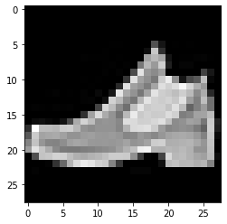

제출은 *.ipynb, *.html, *.pdf 파일로 제출할 것
ipynb파일형태제출을 권장함.
Imports
1. pandas and numpy (35점)
FIFA23
(1)--(3) 아래는 FIFA23 자료를 불러오는 코드이다.
df=pd.read_csv('https://raw.githubusercontent.com/guebin/DV2022/master/posts/FIFA23_official_data.csv').drop(columns=['Loaned From', 'Best Overall Rating']).dropna().reset_index(drop=True)
df.head()| ID | Name | Age | Photo | Nationality | Flag | Overall | Potential | Club | Club Logo | ... | Work Rate | Body Type | Real Face | Position | Joined | Contract Valid Until | Height | Weight | Release Clause | Kit Number | |
|---|---|---|---|---|---|---|---|---|---|---|---|---|---|---|---|---|---|---|---|---|---|
| 0 | 209658 | L. Goretzka | 27 | https://cdn.sofifa.net/players/209/658/23_60.png | Germany | https://cdn.sofifa.net/flags/de.png | 87 | 88 | FC Bayern München | https://cdn.sofifa.net/teams/21/30.png | ... | High/ Medium | Unique | Yes | <span class="pos pos28">SUB | Jul 1, 2018 | 2026 | 189cm | 82kg | €157M | 8.0 |
| 1 | 212198 | Bruno Fernandes | 27 | https://cdn.sofifa.net/players/212/198/23_60.png | Portugal | https://cdn.sofifa.net/flags/pt.png | 86 | 87 | Manchester United | https://cdn.sofifa.net/teams/11/30.png | ... | High/ High | Unique | Yes | <span class="pos pos15">LCM | Jan 30, 2020 | 2026 | 179cm | 69kg | €155M | 8.0 |
| 2 | 224334 | M. Acuña | 30 | https://cdn.sofifa.net/players/224/334/23_60.png | Argentina | https://cdn.sofifa.net/flags/ar.png | 85 | 85 | Sevilla FC | https://cdn.sofifa.net/teams/481/30.png | ... | High/ High | Stocky (170-185) | No | <span class="pos pos7">LB | Sep 14, 2020 | 2024 | 172cm | 69kg | €97.7M | 19.0 |
| 3 | 192985 | K. De Bruyne | 31 | https://cdn.sofifa.net/players/192/985/23_60.png | Belgium | https://cdn.sofifa.net/flags/be.png | 91 | 91 | Manchester City | https://cdn.sofifa.net/teams/10/30.png | ... | High/ High | Unique | Yes | <span class="pos pos13">RCM | Aug 30, 2015 | 2025 | 181cm | 70kg | €198.9M | 17.0 |
| 4 | 224232 | N. Barella | 25 | https://cdn.sofifa.net/players/224/232/23_60.png | Italy | https://cdn.sofifa.net/flags/it.png | 86 | 89 | Inter | https://cdn.sofifa.net/teams/44/30.png | ... | High/ High | Normal (170-) | Yes | <span class="pos pos13">RCM | Sep 1, 2020 | 2026 | 172cm | 68kg | €154.4M | 23.0 |
5 rows × 27 columns
(1) 공백이 포함된 column이름이 총 몇개인지 count하는 코드를 작성하라.
hint 모두 11개의 column name에 공백이 포함되어있음
(2) column name에 공백이 포함된 열을 출력하라.
| Club Logo | Preferred Foot | International Reputation | Weak Foot | Skill Moves | Work Rate | Body Type | Real Face | Contract Valid Until | Release Clause | Kit Number | |
|---|---|---|---|---|---|---|---|---|---|---|---|
| 0 | https://cdn.sofifa.net/teams/21/30.png | Right | 4.0 | 4.0 | 3.0 | High/ Medium | Unique | Yes | 2026 | €157M | 8.0 |
| 1 | https://cdn.sofifa.net/teams/11/30.png | Right | 3.0 | 3.0 | 4.0 | High/ High | Unique | Yes | 2026 | €155M | 8.0 |
| 2 | https://cdn.sofifa.net/teams/481/30.png | Left | 2.0 | 3.0 | 3.0 | High/ High | Stocky (170-185) | No | 2024 | €97.7M | 19.0 |
| 3 | https://cdn.sofifa.net/teams/10/30.png | Right | 4.0 | 5.0 | 4.0 | High/ High | Unique | Yes | 2025 | €198.9M | 17.0 |
| 4 | https://cdn.sofifa.net/teams/44/30.png | Right | 3.0 | 3.0 | 3.0 | High/ High | Normal (170-) | Yes | 2026 | €154.4M | 23.0 |
| ... | ... | ... | ... | ... | ... | ... | ... | ... | ... | ... | ... |
| 16359 | https://cdn.sofifa.net/teams/114628/30.png | Right | 1.0 | 3.0 | 1.0 | Medium/ Medium | Normal (185+) | No | 2027 | €218K | 35.0 |
| 16360 | https://cdn.sofifa.net/teams/1478/30.png | Right | 1.0 | 2.0 | 1.0 | Medium/ Medium | Lean (185+) | No | 2026 | €188K | 21.0 |
| 16361 | https://cdn.sofifa.net/teams/113796/30.png | Right | 1.0 | 2.0 | 1.0 | Medium/ Medium | Lean (185+) | No | 2023 | €142K | 12.0 |
| 16362 | https://cdn.sofifa.net/teams/112260/30.png | Right | 1.0 | 2.0 | 1.0 | Medium/ Medium | Normal (185+) | No | 2021 | €214K | 40.0 |
| 16363 | https://cdn.sofifa.net/teams/702/30.png | Left | 1.0 | 2.0 | 1.0 | Medium/ Medium | Normal (185+) | No | 2021 | €131K | 30.0 |
16364 rows × 11 columns
(3) 데이터프레임을 올바르게 해석한 사람을 모두 고르시오 (모두 맞출경우만 정답으로 인정)
- 세민: 데이터프레임에는 모두 27개의 열이 있다.
- 성재: 한국선수(
Nationality==Korea Republic)와 일본선수(Nationality==Japan)의Overall의 평균값은 일본이 더 높다. - 민정: 총 159개의 나라선수들이 포함되어 있다.
- 슬기: 선수들의 연령이 25세이상(>=)인 선수들은 그렇지 않은 선수들보다 평균적으로 키(
Height)가크다.
삼성전자의 주가
(4)--(5) 다음은 삼성전자의 주가를 크롤링하는 코드이다.
start_date = "2023-01-01"
end_date = "2023-05-02"
y = yf.download("005930.KS", start=start_date, end=end_date)['Adj Close'].to_numpy()[*********************100%***********************] 1 of 1 completed삼성전자의 주가 \({\boldsymbol y}\)를 시각화하면 아래와 같다.

(4) 아래와 같은 변환을 이용하여 \({\boldsymbol y}\)를 \(\tilde {\boldsymbol y}\)로 변환하고 결과를 시각화하라.
- \(\tilde{y}_1= \frac{1}{4}(3y_1 + y_2)\)
- \(\tilde{y}_i= \frac{1}{4}(y_{i-1}+2y_i+y_{i+1})\), for \(i=2,3,\dots,n-1\)
- \(\tilde{y}_n= \frac{1}{4}(y_{n-1}+3y_{n})\)
hint: 아래의 코드를 관찰
array([[2., 1., 0., 0.],
[1., 2., 1., 0.],
[0., 1., 2., 1.],
[0., 0., 1., 2.]])(5) (4)의 변환을 50회 반복적용하고 결과를 시각화하라.
회귀모형
(6)--(7) \((x_i,y_i)\)가 아래와 같이 주어졌다고 가정하자.
x = np.array([0.00983, 0.01098, 0.02951, 0.0384 , 0.03973, 0.04178, 0.0533 ,
0.058 , 0.09454, 0.1103 , 0.1328 , 0.1412 , 0.1497 , 0.1664 ,
0.1906 , 0.1923 , 0.198 , 0.2141 , 0.2393 , 0.2433 , 0.3157 ,
0.3228 , 0.3418 , 0.3552 , 0.3918 , 0.3962 , 0.4 , 0.4482 ,
0.496 , 0.507 , 0.53 , 0.5654 , 0.582 , 0.5854 , 0.5854 ,
0.6606 , 0.7007 , 0.723 , 0.7305 , 0.7383 , 0.7656 , 0.7725 ,
0.831 , 0.8896 , 0.9053 , 0.914 , 0.949 , 0.952 , 0.9727 ,
0.982 ])
y = np.array([0.7381, 0.7043, 0.3937, 0.1365, 0.3784, 0.3028, 0.1037, 0.3846,
0.706 , 0.7572, 0.2421, 0.232 , 0.9855, 1.162 , 0.4653, 0.6791,
0.6905, 0.6865, 0.9757, 0.7665, 0.9522, 0.4641, 0.5498, 1.1509,
0.5288, 1.1195, 1.1659, 1.4341, 1.2779, 1.1648, 1.4002, 0.7472,
0.9142, 0.9658, 1.0707, 1.4501, 1.6758, 0.8778, 1.3384, 0.7476,
1.3086, 1.7537, 1.5559, 1.2928, 1.3832, 1.3115, 1.3382, 1.536 ,
1.9177, 1.2069])
6. 아래의 수식을 이용하여 적절한 추세선 \(\hat{y}_i= \hat{\beta}_0 +\hat{\beta}_1 x_i\)를 구하고 시각화하라.
\[\begin{bmatrix} \hat{\beta}_0 \\ \hat{\beta}_1 \end{bmatrix} = ({\bf X}^T {\bf X})^{-1}{\bf X}^T {\boldsymbol y}, \quad {\bf X}=\begin{bmatrix} 1 & x_1 \\ 1 & x_2 \\ \dots \\ 1 & x_n \end{bmatrix}\]
7. \(\frac{1}{n}\sum_{i=1}^{n}(y_i-\hat{y}_i)^2\)을 계산하라.
2. fashion MNIST data (60점)
아래는 9가지의 의류이미지가 저장된 이미지데이터를 불러오는 코드이다.
xtrain = np.apply_along_axis(rshp,axis=1,arr=np.array(df_train.iloc[:,1:]))
xtest = np.apply_along_axis(rshp,axis=1,arr=np.array(df_test.iloc[:,1:]))
ytrain = np.array(df_train.label)
ytest = np.array(df_test.label)NameError: name 'df_train' is not defined아래는 데이터에 대한 설명이다.
- 전체의 이미지의 수는 70000개이며, 60000개의 이미지 \({\tt xtrain}\)에 10000개의 이미지는 \({\tt xtest}\)에 저장되어 있다.
- 이미지에 대한 라벨은 각각 \({\tt ytrain}\)과 \(\tt ytest\)에 저장되어 있다. 따라서 \(\tt ytrain\)에는 60000개의 이미지에 해당하는 라벨이, \(\tt ytest\)에는 10000개의 이미지에 해당하는 라벨이 기록되어 있다.
- 보통 분석에서는 60000개의 이미지를 가지고 라벨을 맞추는 “훈련”을 하고 (\({\tt xtrain}\)을 이용하여 \({\tt ytrain}\)을 맞추는 방법을 학습하고), 그러한 훈련이 잘 되었는지 10000개의 이미지를 이용하여 “테스트”한다.
- 위와 같은 의미로 \(({\tt xtrain}, {\tt ytrain})\) 을 training data set, \(({\tt xtest},{\tt ytest})\) 를 test data set 이라고 부른다. (ref: 위키참고)
아래는 이미지자료와 시각화에 대한 설명이다.
- 각 이미지는 (28,28) 픽셀의 흑백이미지이다. 따라서 각 이미지는 (28,28,3) 이 아니라 (28,28) 의 shape을 가진 텐서로 구성되어있다.
- 흑백이미지를 시각화 하기 위해서는
plt.imshow(img, cmap='gray')를 이용한다. 여기에서 \({\tt img}\)은 임의의 2차원 텐서이며 이 예제의 경우 (28,28)의 shape을 가진다.
아래는 \({\tt xtrain}\)의 두번째 이미지, 즉 \({\tt xtrain[1,:,:]}\)를 확인하는 코드의 예시이다.
<matplotlib.image.AxesImage at 0x7f4552a11df0>
이 이미지에 대한 label은 \({\tt ytrain[1]}\)의 값으로 확인가능하다.
이미지와 라벨을 한번에 표현하는 코드는 아래와 같이 작성가능하다.

여기에서 9가 의미하는 것은 ’Ankel boot’이며, 다른 숫자가 의미하는 것은 각각 아래와 같다.
아래는 \({\tt xtrain}\)의 처음 10개의 이미지를 라벨과 함께 출력하는 코드이다.
fig, ax = plt.subplots(2,5,figsize=(10,5))
ax[0][0].imshow(xtrain[0],cmap='gray'); ax[0][0].set_title('label={}'.format(labels[ytest[0]]));
ax[0][1].imshow(xtrain[1],cmap='gray'); ax[0][1].set_title('label={}'.format(labels[ytest[1]]));
ax[0][2].imshow(xtrain[2],cmap='gray'); ax[0][2].set_title('label={}'.format(labels[ytest[2]]));
ax[0][3].imshow(xtrain[3],cmap='gray'); ax[0][3].set_title('label={}'.format(labels[ytest[3]]));
ax[0][4].imshow(xtrain[4],cmap='gray'); ax[0][4].set_title('label={}'.format(labels[ytest[4]]));
ax[1][0].imshow(xtrain[5],cmap='gray'); ax[1][0].set_title('label={}'.format(labels[ytest[5]]));
ax[1][1].imshow(xtrain[6],cmap='gray'); ax[1][1].set_title('label={}'.format(labels[ytest[6]]));
ax[1][2].imshow(xtrain[7],cmap='gray'); ax[1][2].set_title('label={}'.format(labels[ytest[7]]));
ax[1][3].imshow(xtrain[8],cmap='gray'); ax[1][3].set_title('label={}'.format(labels[ytest[8]]));
ax[1][4].imshow(xtrain[9],cmap='gray'); ax[1][4].set_title('label={}'.format(labels[ytest[9]]));
fig.tight_layout()
(1) \({\tt xtrain}\)에서 각 라벨에 대한 평균이미지를 계산하고 계산결과를 \({\tt imgmean}\)에 길이가 10인 list로 저장하라. 즉 \({\tt imgmean}\)은 아래와 같은 자료구조를 가지고 있어야 한다.
- \({\tt imgmean}=\big[{\tt imgmean[0]},\dots, {\tt imgmean[9]}\big]\)
- \({\tt imgmean[0]}, \dots, {\tt imgmean[9]}\) 는 각각 (28,28)의 shape을 가진 numpy array
- \({\tt imgmean[0]}, \dots, {\tt imgmean[9]}\) 는 각각 숫자 0,1, …, 9의 평균이미지를 의미
\({\tt imgmean[0]},\dots, {\tt imgmean[9]}\)를 시각화 하라. 시각화예시는 아래와 같다.
note: 그림에 대한 라벨은 시각화 하지 않아도 무방하다. (감점없음)
(2) 아래와 같은 numpy array 를 생성하라.
\[{\tt loss}= \begin{bmatrix} {\tt loss[0,0]} & \dots & {\tt loss[0,9]} \\ {\tt loss[1,0]} & \dots & {\tt loss[1,9]} \\ \dots & \dots & \dots \\ {\tt loss[59999,0]}& \dots &{\tt loss[59999,9]} \\ \end{bmatrix}\]
여기에서
\[{\tt loss[i,j]} = \frac{1}{28\times 28} \sum_{p=0}^{27}\sum_{q=0}^{27}\big({\tt xtrain[i,p,q]}-{\tt imgmean[j][p,q]}\big)^2\]
이다. 이제 \({\tt loss}\)에서 “최소값을 가지는 원소의 인덱스를 출력”하는 함수를 행별로 적용해 이미지를 분류하라. 예를들어 모든 \(j=0,1,\dots,9\) 에 대하여 아래를 계산한 결과
\[\frac{1}{28\times 28} \sum_{p=0}^{27}\sum_{q=0}^{27}\big({\tt xtrain[1,p,q]}-{\tt imgmean[j][p,q]}\big)^2\]
\(j=9\)일 경우 그 값이 가장 작다면 \({\tt xtrain[1]}\) 이미지는 9번으로 분류한다. 분류한 결과와 실제 라벨 \({\tt ytrain}\)을 비교하라. 얼마나 많은 결과가 일치하는지 비율을 계산하라.
(3) \({\tt xtrain}\)에서 학습한 평균이미지 \({\tt imgmean}\)를 바탕으로 \({\tt xtest}\)의 1번라벨에 해당하는 이미지만을 분류하라. 아래의 물음에 답하라.
- 1번라벨에 해당하는 이미지를 0번라벨로 분류한 경우는 모두 몇건인가? (잘못된 분류)
- 1번라벨에 해당하는 이미지를 1번라벨로 분류한 경우는 모두 몇건인가? (올바른 분류)
- \(\dots\)
- 1번라벨에 해당하는 이미지를 9번라벨로 분류한 경우는 모두 몇건인가? (잘못된 분류)
hint: 아래와 같은 결과를 주는 dictionary를 만들면 된다.
{0: 28, 1: 895, 2: 11, 3: 36, 4: 8, 5: 12, 6: 10, 7: 0, 8: 0, 9: 0}- 1번라벨에 해당하는 이미지를 0번라벨로 분류한 경우는 모두 28건
- 1번라벨에 해당하는 이미지를 1번라벨로 분류한 경우는 모두 895건
- \(\dots\)
- 1번라벨에 해당하는 이미지를 9번라벨로 분류한 경우는 모두 0건
(4) \({\tt xtest}\)의 이미지를 올바르게 분류한 비율을 카테고리별로 정리하라.
### 출력예시
{'T-shirt/top': 0.7,
'Trouser': 0.895,
'Pullover': 0.496,
'Dress': 0.802,
'Coat': 0.599,
'Sandal': 0.757,
'Shirt': 0.202,
'Sneaker': 0.794,
'Bag': 0.761,
'Ankel boot': 0.851}3. 파이썬의 설치 (5점)
다음을 읽고 파이썬과 가상환경에 대하여 올바른 진술을 한 사람을 모두 골라라. (모두 맞출 경우만 정답으로 인정함)
민정: 구글코랩은 사용자의 컴퓨터에 설치된 아나콘다를 기반으로 동작하며, 실제적으로는 사용자의 ipython과 크롬과의 통신만을 담당한다. 따라서 구글코랩은 반드시 파이썬만 연결하여 사용가능하지 않으며 실제로 구글코랩에 R을 연결하여 사용하기도 한다.
구환: 아래와 같이 스크립트로 구성되 mysum.py와 같은 파이썬파일을 실행하기 위해서는 반드시 ipython 이나 주피터랩이 설치된 상태이어야 한다.
슬기: 아나콘다를 이용하여 가상환경을 만들 경우 두 가지버전 이상의 python을 동시에 관리할 수 있다.
승민: 아래와 같이 myfuns.py 파일을 구성하였다고 하자.
이 경우 아래와 같이 임의의 주피터 노트북에서 myfuns를 임포트하면 vec2_add 함수를 사용할 수 있다.
단, 여기에서 myfuns.py는 현재 실행중인 노트북과 같은 폴더에 있다고 가정한다.